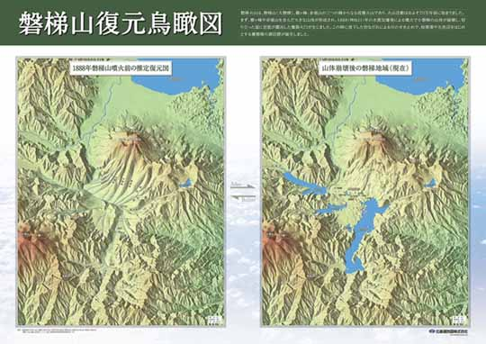

地図展優秀地図選定
「地図展優秀地図」とは？
日本地図学会定期大会では、毎年「地図・図書展」が開催されており、各機関・企業の優れた地図・図書が多数展示、販売されています。本学会において、「定期大会地図・図書展に出展された地図の中で優秀地図を選定・表彰し地図展への出展について関心を高め、また、質の高い優秀地図をICAの国際地図展に出展すること」が議論され、例年実施されている地図・図書展示が、優秀地図の発掘、ならびに日本の地図作製技術向上の一助になることを願い、平成20年度定期大会より「優秀地図表彰のための投票」を実施しています。
投票は、定期大会に参加された会員により、地図・図書展示会場において、「地図作製の企画及び作製技術の面で優れている」と認められる地図を３点選定する形で行われています（試作品を含む紙地図を対象）。
投票の結果、３点を優秀賞として表彰しており、このサイトでは、惜しくも僅差で受賞をのがした作品２点も掲載しました。
なお、「地図展優秀地図選定」の運営は、マップセンター委員会（第26期委員長 山本国雄）が中心となって実施しています。出展希望の機関・企業を広く受け付けております。定期大会地図・図書展示に関するお問い合せは、学会事務局までお願いいたします。
第７回（平成26年度）
優秀賞
仙台藩とその周辺の城
制作：株式会社東京地図研究社
出展機関：株式会社東京地図研究社


陸海シームレス陰陽図
制作：朝日航洋株式会社
出展機関：朝日航洋株式会社

惜しくも、受賞をのがした作品
ジオパーク三陸
制作：北海道地図株式会社
出展機関：北海道地図株式会社

磐梯山復元鳥瞰図
制作：北海道地図株式会社
出展機関：北海道地図株式会社

平成26年度定期大会 地図・図書展示 出展機関・企業
１．朝日航洋(株) ２．海上保安庁海洋情報部 ３．(株)グローバルプランニング ４．国土地図(株) ５．国土地理院 ６．(株)古今書院 ７．（株）ゼンリン
８．地図工房トンビの目 ９．(一財)地図情報センター 10．東京カートグラフィック(株) 11．(株)東京地図研究社 12．(一財)日本水路協会 13．(一財)日本地図センター
14．北海道地図(株)
第６回（平成25年度）
優秀賞
弧状の日本列島
制作：株式会社グローバルプランニング
出展機関：株式会社グローバルプランニング
ジオアート 白山手取川
制作：北海道地図株式会社
出展機関：北海道地図株式会社


北極域 Arctic Region
制作：北極環境研究コンソーシアム
国立極地研究所
北海道地図株式会社
出展機関：北海道地図株式会社
霊峰富士と関東の山々
制作：織田雅己
出展機関：地図工房トンビの目

惜しくも、受賞をのがした作品
ジオアート アポイ岳・日高山脈
制作：北海道地図株式会社
出展機関：北海道地図株式会社

ジオアート ゆざわ
制作：北海道地図株式会社
出展機関：北海道地図株式会社
地図柄ペーパーバッグ ２種(ブルー、ピンク)
制作：東京カートグラフィック株式会社
出展機関：東京カートグラフィック株式会社
受賞作品：東京カートグラフィック株式会社 サイト
平成25年度定期大会 地図・図書展示 出展機関・企業
１．地図工房トンビの目 ２．北海道地図(株) ３．(株)古今書院 ４．(株)グローバルプランニング ５．(株)ゼンリン ６．東京カートグラフィック(株)
７．海上保安庁 海洋情報部 ８．国土交通省 国土地理院 ９．(一財)日本水路協会 10．(一財)地図情報センター
© 2014 Japan Cartographers Association.